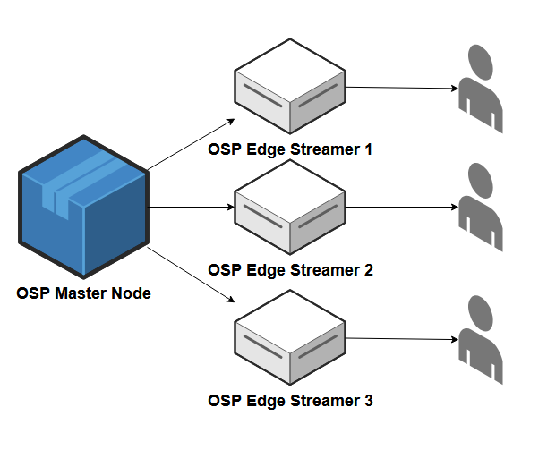
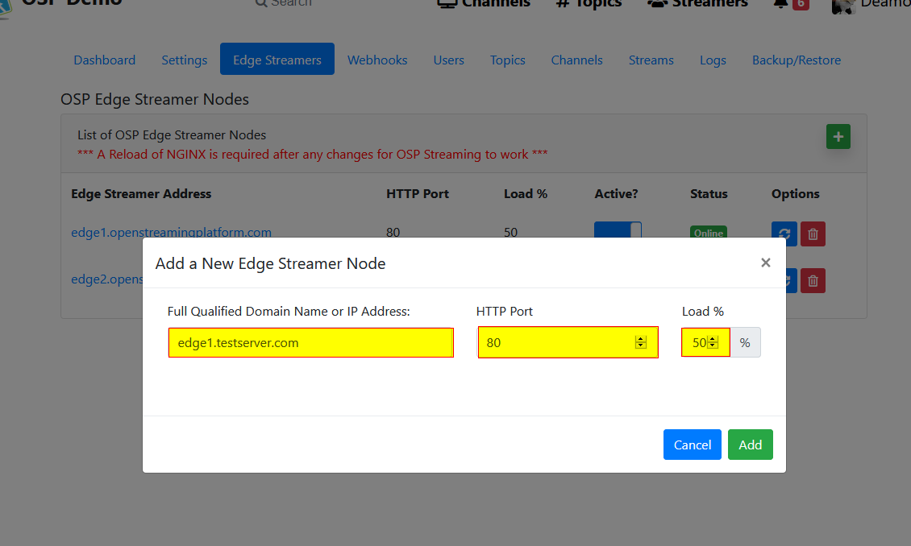

OSP-Edge
The OSP Edge Streamer acts as a load balanced endpoint for OSP, allowing Live Stream viewers to be offloaded from the primary OSP Node to a cluster of Nginx-RTMP servers configured to receive RTMP restreams from the master. A minimum of Beta 5 is required to use.

As many OSP Edge Streamer Nodes are needed can be created and added to OSP by an admin under the Admin -> Edge Streamers Configuration options.
Setup OSP Edge Streamer
Clone the OSP Edge Streamer Repo from: https://gitlab.com/Deamos/open-streaming-platform-edge-streamer
Once the server has finished setting up, Go to OSP and add the Fully qualified domain name to the Edge Streamer section in the Admin Settings.
Load should be set to equal 100% between all Edge Streamers.
Note: Edge Streamers must be setup with the same protocol (HTTP/HTTPS) as the main OSP site.
Note: Port 443 and 80 are not passed to the configuration file since it is handled by OSP’s protocol. Only change these values if you are using a non-standard port
Note: Starting in Beta 6, the Master OSP Server can act as an Edge Node. This can be manually added by using the Master OSP Server’s Site Address, as set in the Admin Settings Screen

Activate each Edge Streamer that will be used.
After adding your settings, you will need to restart Nginx-RTMP on the primary OSP Server
sudo systemctl restart nginx-osp